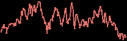
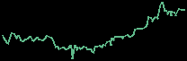
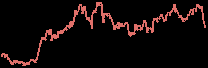

Corporate Sector Intelligence 09:15 · Fri 6 Nov 2026 · news since Thu 05 Nov 09:30 (Zurich) |
At a glance Prices as of 09:14 Zurich 1. Nordic Renewables and Power: Akershus Energi lifted nine-month profit on higher eastern Norwegian power prices. 2. Lundin Group of companies: NGEx Minerals set out a Phase 5 Lunahuasi programme with up to eight rigs; Iraq's oil ministry plans to put SOMO staff on Kurdistan Region oilfields (ShaMaran). 3. EU-listed oil and gas: Vaalco Energy raised third-quarter output after finishing its Gabon campaign and starting Phase Five at Baobab. |
|
1. Nordic Renewables and Power |
Akershus Energi · unlisted |
2. Lundin Group of companies |
NGEx Minerals 20.70 1d −4.6% 1m −16.7%YTD −19.1% CAD · close 5 Nov |  NGEX.TO · 1 year |
NGEx Minerals set out plans for a Phase 5 drill programme at Lunahuasi in San Juan, Argentina, using up to eight rigs to define and step out existing zones and to test new targets (announced yesterday). It will also start developing an exploration adit in parallel, subject to remaining permits. Initial metallurgical tests returned clean copper concentrates grading up to 39% copper. Phase 5 is the next dated work programme after Phase 4 ended in April; the Valiente spin-out effective 12 November was already covered on 4 November. |
ShaMaran Petroleum 1.68 1d 0.0% 1m +12.0% NOK · close 5 Nov |  SNM.OL · 1 year |
Relevant to ShaMaran's Kurdistan production; Baghdad and Erbil still dispute how much the region produces. |
3. EU-listed oil and gas |
Vaalco Energy 5.38 1d −0.4% 1m −6.9%YTD +47.8% USD · close 5 Nov |  EGY · 1 year |
Vaalco Energy produced 20,145 barrels of oil per day net of royalties in the third quarter, up on the prior quarter and within guidance, after completing its Gabon drilling campaign and starting Phase Five drilling at Baobab in Côte d'Ivoire. Adjusted earnings before interest, tax, depreciation, amortisation and exploration (EBITDAX) rose to $71.1 million. It guided fourth-quarter net sales between 20,800 and 22,600 barrels per day. |
| Corporate Sector Intelligence · primary sources: Oslo Børs NewsWeb, MFN, Nasdaq Nordic, Investegate RNS, company releases. Our view only, not investment advice. |